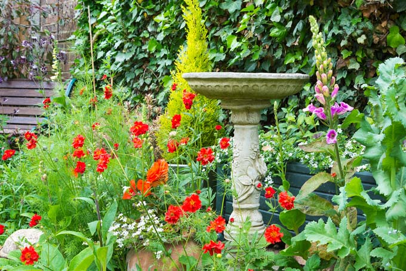

The cottage garden is a distinct style of garden that uses an informal design, dense plantings, and a mixture of ornamental and edible plants
The Cottage Garden originated in England and its history can be traced back for centuries, although they were invented in 1870's England, when stylized versions were formed as a reaction to the more structured and rigorously maintained English state gardens
The earliest cottage gardens were more practical than their modern descendants, with an emphasis on vegetables and herbs, along with some fruit trees.
